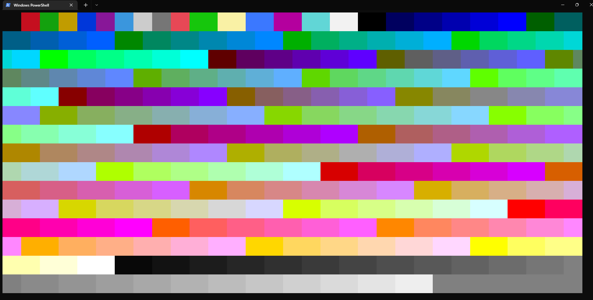
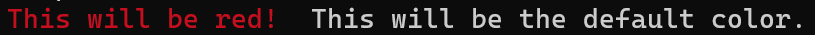
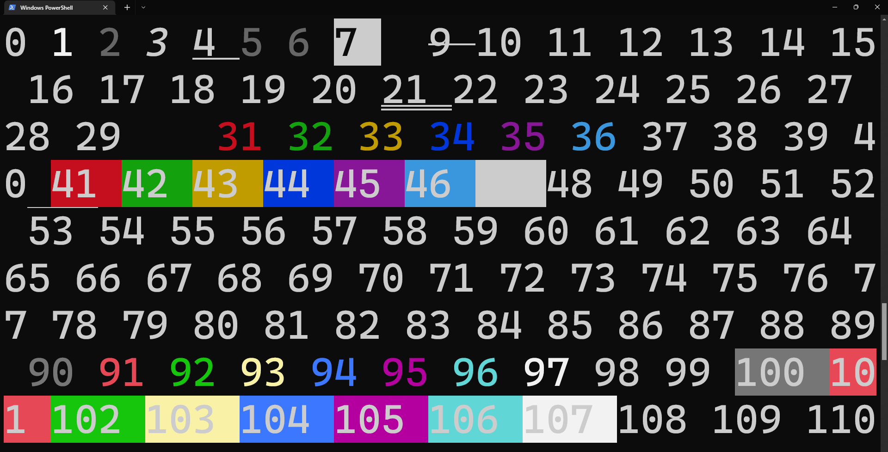
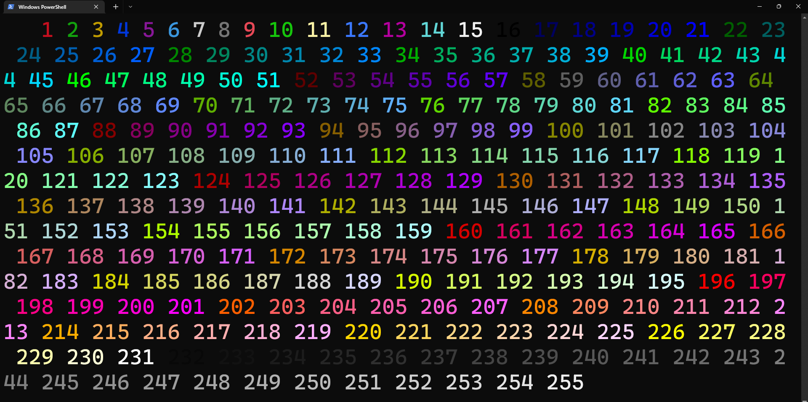
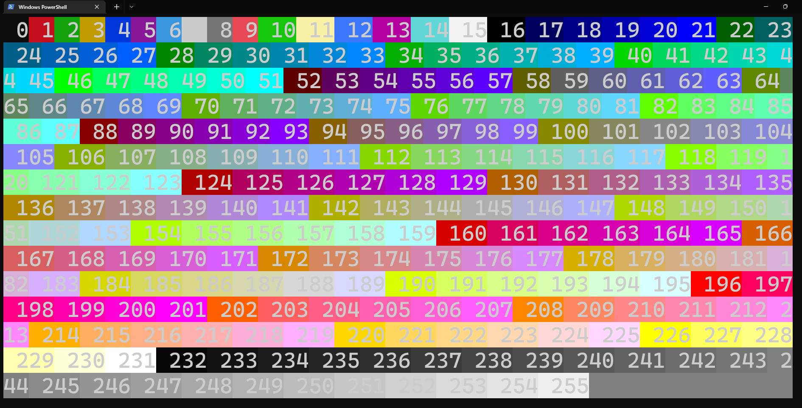

how to use colors in terminals

With many programming languages, you can change the color and the style of your output to a terminal using ANSI codes.
Here's how:
with C++:
cout << "\x1b[31m This will be red! \x1b[0m This will be the default color.";with Python:
print("\x1b[31m This will be red! \x1b[0m This will be the default color.")
As you can see, the string did not need to change at all even with a different programming language. The odd-looking parts of the string are called ANSI codes. The first one, \x1b[31m, changed the color of all printed text after it to red until the second ANSI code, \x1b[0m, reset all following output to the defaults.
To use different colors and styles, you only need to change the second number. For example, \x1b[31m is red, \x1b[32m is green, \x1b[33m is yellow, etc. You can also change the background color, add style such as an underline or italics, and you can even mix and match these. Apply multiple colors and/or styles at once by putting semicolons between multiple numbers, such as \x1b[4;32;43m to print text that is underlined and green with a yellow background. Some programming languages have libraries that make working with colors easier, such as Python's Colorama library. Here's an MIT-licensed enum you can use with many colors and styles. Otherwise, you can see the ANSI code for many colors and styles on Wikipedia, or in the images below.
\x1b[#m (replace # with one of the numbers below).

\x1b[38;5;#m (replace # with one of the numbers below).

\x1b[48;5;#m (replace # with one of the numbers below).

Or to choose from among 16,777,216 color options, use \x1b[38;2;R;G;Bm and replace R, G, and B with numbers each in the range 0-255 that represent red, green, and blue values respectively. This changes the foreground color. To change the background color, the same is true but with \x1b[48;2;R;G;Bm.
You can change the color of many emoji/Unicode symbols. Here's [§] how to print emoji with C++ (and Python, and other languages). ANSI escape codes can also be used to control where the cursor is (you can even move the cursor up); see [§] how to control the terminal's cursor.
To see some of the possible colors, styles, and combinations of these in your own terminal, try the code below.
with C++:
// adapted from the code written by rabin utam: https://stackoverflow.com/questions/287871/how-to-print-colored-text-to-the-terminal
#include <iostream>
#include <string>
using namespace std;
int main() {
for (int style = 0; style < 8; style++) {
for (int fg = 30; fg < 38; fg++) {
string s1 = "";
for (int bg = 40; bg < 48; bg++) {
string format = to_string(style) + ";" + to_string(fg) + ";" + to_string(bg);
s1 += "\x1b[" + format + "m " + format + "\x1b[0m";
}
cout << s1 << endl;
}
cout << endl;
}
}with Python:
# Credit to rabin utam: https://stackoverflow.com/questions/287871/how-to-print-colored-text-to-the-terminal
def print_format_table():
"""Prints table of formatted text format options."""
for style in range(8):
for fg in range(30,38):
s1 = ''
for bg in range(40,48):
format = ';'.join([str(style), str(fg), str(bg)])
s1 += '\x1b[%sm %s \x1b[0m' % (format, format)
print(s1)
print()
print_format_table()Not all terminals display colors using ANSI codes and some have small differences in how they use ANSI codes to display some colors and styles. For example, most methods of running the code on Windows either cannot use ANSI codes at all or cannot display some things like italics, faint colors, and flashing colors. Windows Terminal is highly recommended for Windows users. If you're using C++ and Windows, here's [§] how to run your C++ app in Windows Terminal.